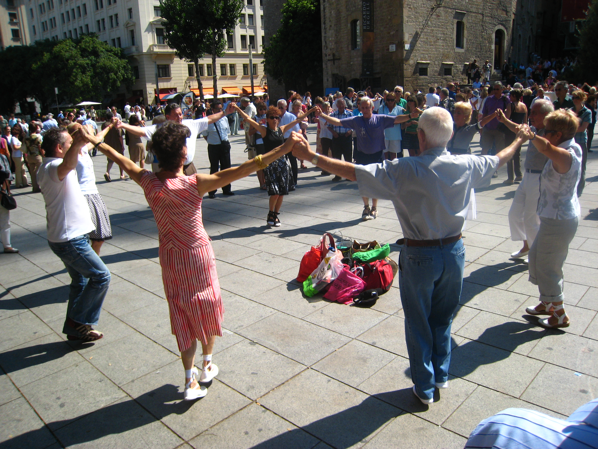

Song & Dance
The Sardana; one of Catalalunya's most famous traditions
The Sardana
 While Catalunya has a rich musical history its most famous, and culturally relevant song and dance come in the form of the Sardana. The exact date of its origin is unclear but the Sardana was expected to have gained popularity as early as the 16th century. It is believed to have originated in the historical region of Emporda in the North-east Catalan region.
In the 19th century the Sardana grew in popularity as it spread across Catalunya like wildfire. Throughout the beginning of the 19th century its fame allowed it to become one of the paramount symbols of the Catalan identity alongside the Catalan language. Like the Catalan language, the Sardana was banned in times of Catalan oppression throughout the history of the region because of its significance as a symbol of unity among Catalan people
As you can see by the image the Sardana involves a group of individuals, standing in a circle holding hands. This circle only breaks when someone else intends to join it. Hands are always held high, at their shoulders or above their heads, only ever dropping to accommodate pauses in the music. It is a relatively simple dance, however, it allows anyone who can share in its simple movements to be a part of its small “society.”
The Sardana at the Barcelona Cathedral
Next: ArtImage: Courtesy of Wikimedia Commons